Island Park to the Scenic Byway
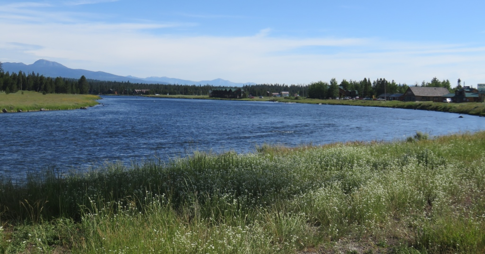
North Fork Snake RiverI started this day off the route to go on the Mesa Falls Scenic Byway. I rejoined the TD course and followed it for the last 50 miles or so. It was definitely harder than I expected in the last 20 miles where I found roots and rocks galore.
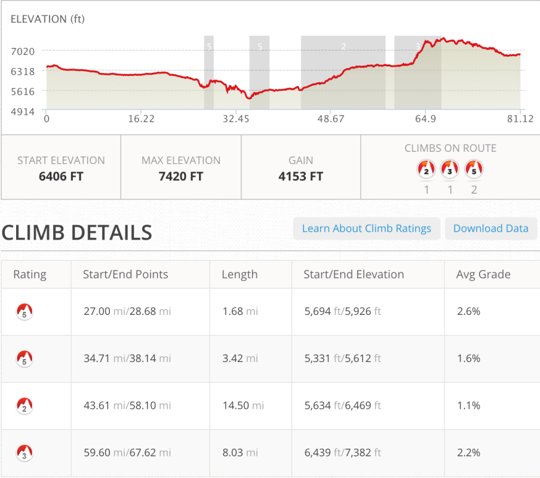
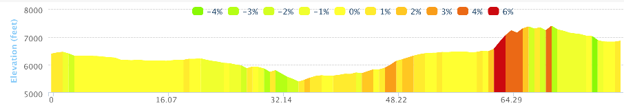
The Scenic Byway was a nice stretch of road that had virtually no cars on it for it's entire 13 mile length. There were a few people at the falls and a boy scout troop cleaning out moth webs.
 Tetons from 40 miles
Tetons from 40 miles
Mesa Falls
The Mesa Falls was one of the nicest waterfalls I've seen. There was a great rainbow along the upper falls and I would love to go back and do a walk along the whole trail.
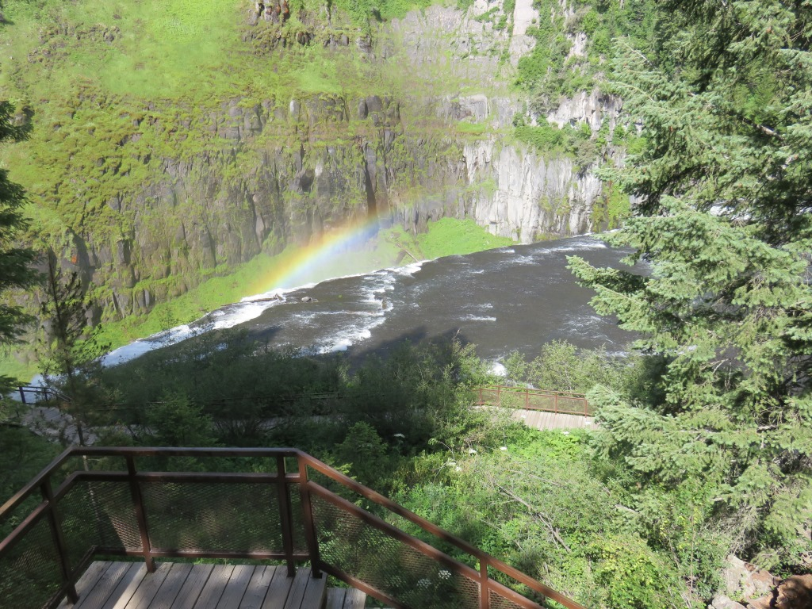
Upper Mesa Falls
1
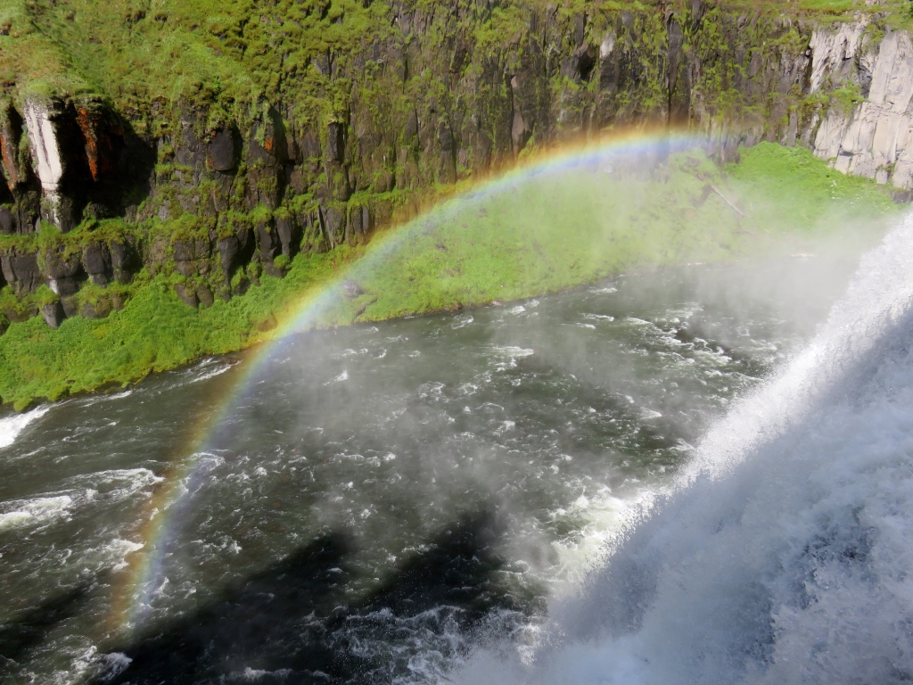
Upper Mesa Falls
2
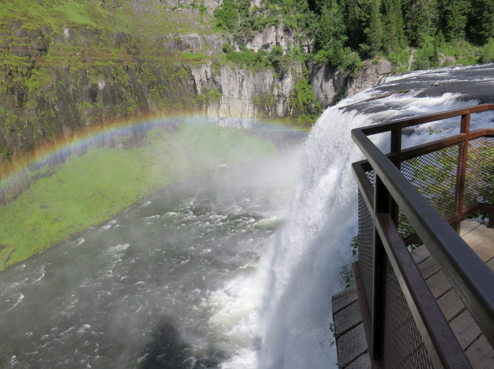
Upper Mesa Falls
3

Upper Mesa Falls
4
I parked by this restored hotel to walk along the falls trail
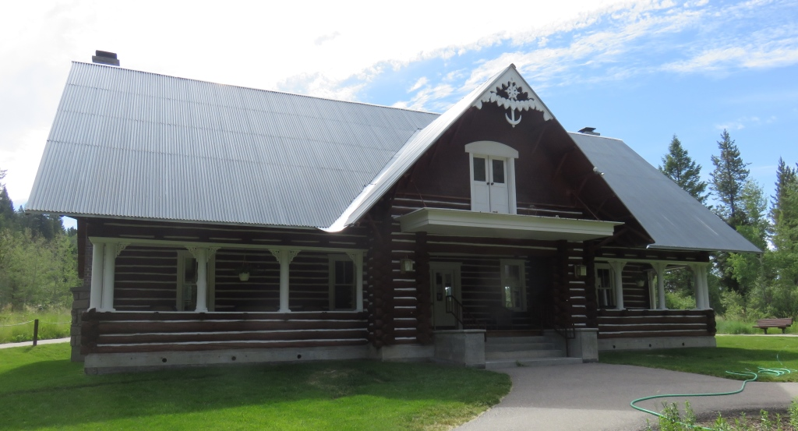
The road to the Upper Falls was down about a mile so I decided to skip the Lower Fall road and the additional climbs. I should have taken my time and seen the whole thing.

Along the scenic byway with the Tetons in the distance
The Tetons dominated the skyline but I couldn't really see how I was going to get to the other side. Later in the day an eight mile climb would show me the way.
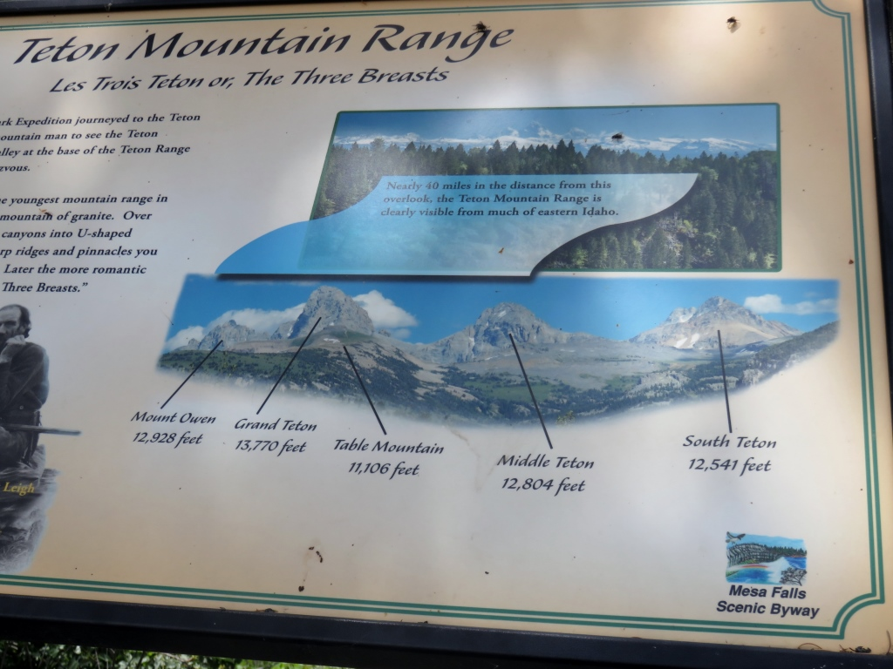
An explanation of the naming of the Tetons from the Scenic BywayI was traveling down alongside 'Henry's Fork' and the scenic byway. I crossed over the Warm River just before it runs into Henry's Fork which I had been traveling along for the past 35 miles.
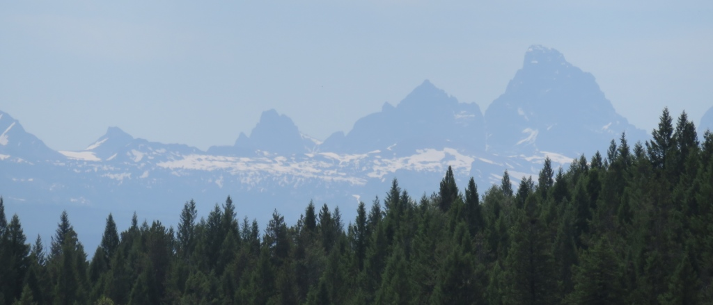
I had a gradual climb heading toward the Tetons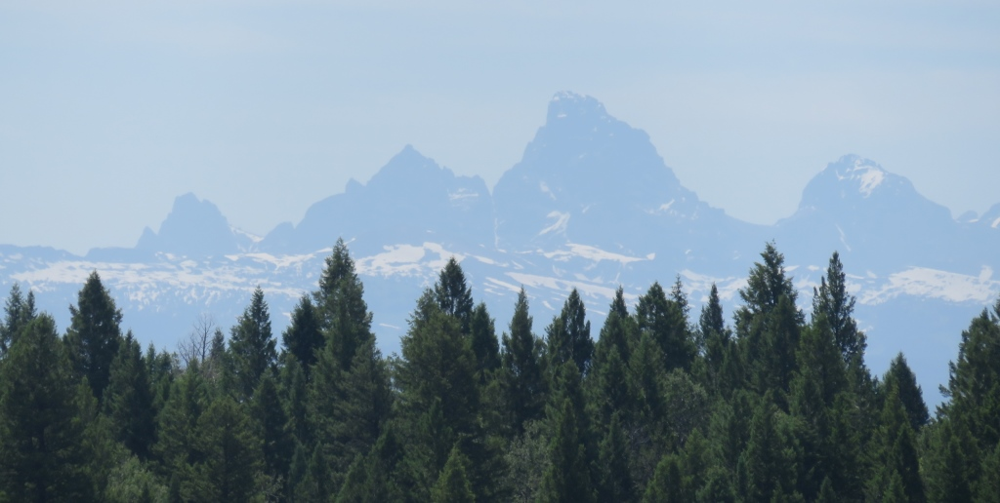
Ashton Flagg Ranch Road
There was a flat section during the next 10 miles as I approached the Falls River. I stopped at the Squirrel Creek Elk Ranch and meet the three people in the TD race from Africa. They were just leaving. It was a father, who ran a NGO in Malawi, and his two sons. They were originally from Toronto. I had seen them off and on over the past week. Lunch was excellent and I was able to resupply my water/gatorade.
 The flat gradual part of Ashton Flagg Ranch Road
The flat gradual part of Ashton Flagg Ranch Road
It appears that Dick Chaney may have been here at the entrance to Wyoming
Grassy Lake Road/Ashton-Flagg Ranch Rd as described on the NPS website "the east-west artery through the John D. Rockefeller, Jr. Memorial Parkway.
- "It is 36 miles of gravel road - sometimes washboarded, sometimes rutted, often windy, always
narrow."
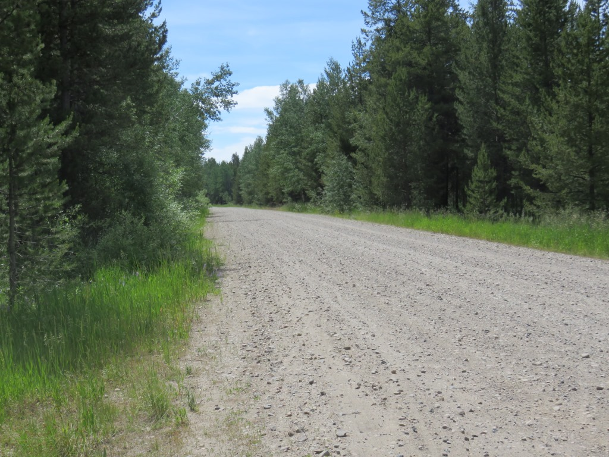
Gravel road - not great for bikes.
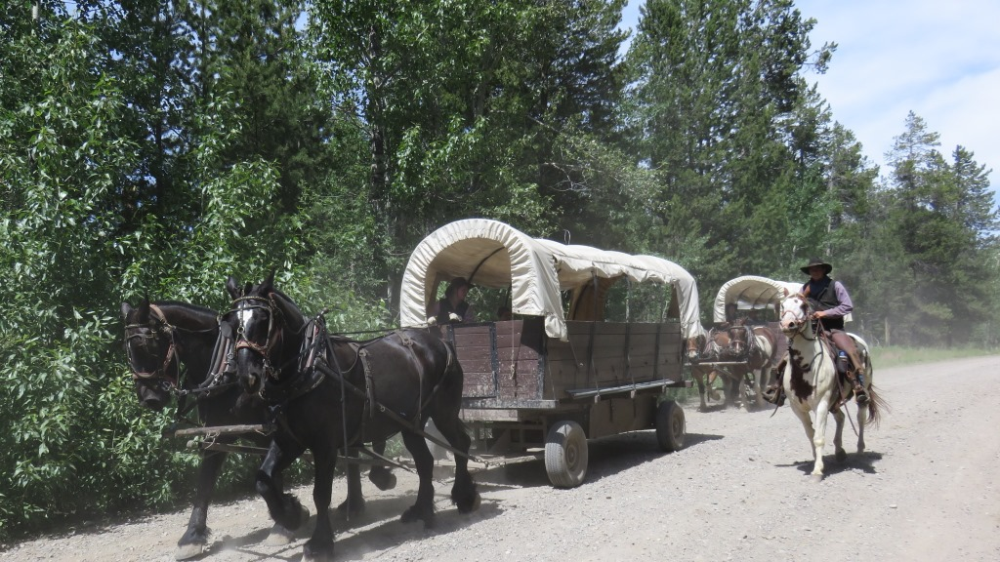
Wagon train - near the state lineI went by a wagon train of tourists in the covered wagon and thought I was getting close to civilization. I was not. The last 15 miles were a slog as the description above indicates.
 The trail from the NPS site. This is a smooth section.
The trail from the NPS site. This is a smooth section.
I rode/walked up the 10 mile stretch of rutted and rocky gravel before flagging down a truck
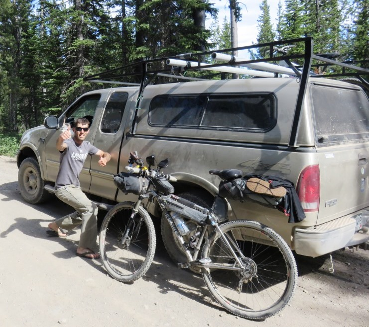
My first vehicle assist.I got a short assist from a nice couple in a pickup truck about 4:30. I got a 20 minute ride and a beer while we looked for their campground near Grassy Lake. It wasn't easy getting the fully loaded bike up onto the rack on the roof of the truck but the three or so miles he took me was a great assist. They had done some bike packing in New Zealand so understood what the end of the day could be like.
Down into Flagg Ranch
The last five miles into Flagg Ranch was better because it was mostly down. Nice to get to the end of a long day.
Flagg Ranch, WY
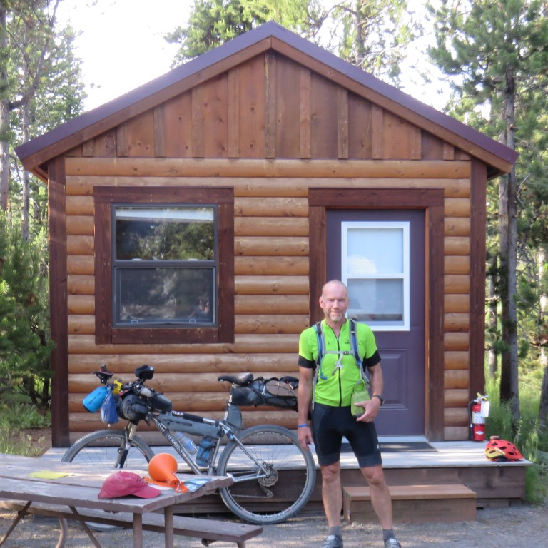
My cabin for the night of June 24 in Flagg Ranch, WYKathy, Kelly and I had stayed in Flagg Ranch in 1994 when we visited Yellowstone. The cabins we stayed in were now staff quarters. I was able to get a shower and a very nice meal at the lodge. My room had no lights or electricity but worked better than being outside. Lots of RVs and families. Certainly more people than I had seen in quite a while.
June 24 - ~81 miles - Island Park, ID to Flagg Ranch between Yellowstone and the Grand Tetons